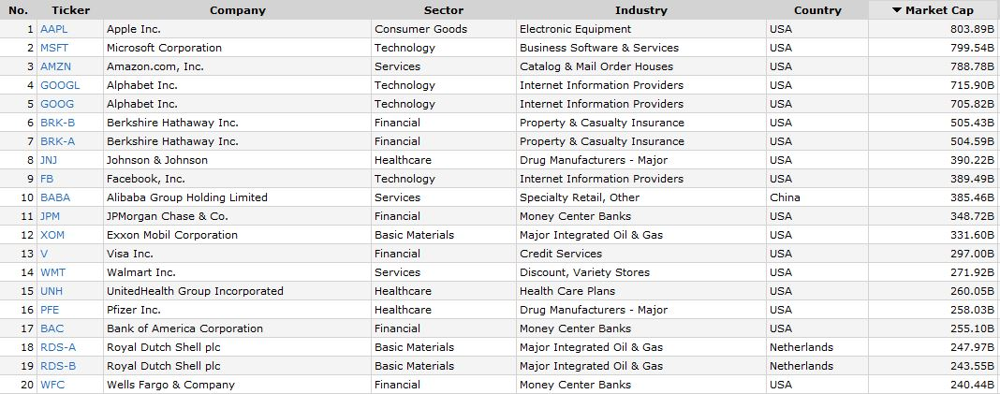

Zmiany zachodzące w gospodarce światowej potocznie ujmowane jako globalizacja charakteryzują się trzema właściwościami:
- są nieuniknione
- mają charakter dynamiczny
- oddziałują na każdą sferę życia
Sczególnie wpływają na strukturę gospodarki światowej oraz zasady funkcjonowania podmiotów gospodarczych takich jak KTN.
Źródło: Rosińska-Bukowska M.,[2009], Rola korporacji transnarodowych w procesach globalizacji
KTN - to przedsiębiorstwa będące spółką kapitałową (akcyjną lub z ograniczoną odpowiedzialnością), które składają się z przedsiębiorstw macierzystych i filii zagranicznych. Przedsiębiorstwem macierzystym jest przedsiębiorstwo, które kontroluje aktywa innych podmiotów w krajach poza krajem macierzystym, będąc zwykle w posiadaniu pewnego udziału (akcji) w kapitale własnym tych podmiotów
Źródło: World Investment Report 2009. Transnational Corporations, Agricultural Production and Development, United Nations, New York-Genewa 2007, s. 17
Chrakterystyka KTN:
- suwerenność
- złożoność
- rozlokowanie geograficzne
- specjalizacja
- zdolność arbitrażowania
- elastyczność organizowania
- globalna efektywność
- zdolność integrowania
- hierarchiczna organizacja
Ronald Coase, 1910–2013 - co powoduje, że firmy istnieją?
w artykule "The Nature of the Firm" z 1937 roku - Coase podkreślił:
- wskazał transakcję jako jednostkę analizy,
- zarysował koncepcję kosztów transakcyjnych,
- pokazał różnicę między lokowaniem zasobów wewnątrz przedsiębiorstwa a kupowaniem usług na rynku,
- przeprowadził analizę kosztów w organizowaniu transakcji na rynku lub wewnątrz przedsiębiorstwa.
Przedsiębiorstwo to transakcje - realizacja transakcji pociąga za sobą koszty, poszczególne działania będą wykonywane w firmie tak długo, jak długo ich koszt będzie niższy niż zakup tych działań na rynku.
Wielkość wybranych korporacji

Źródło: Transnational Corporations 2018,[dostęp]https://unctad.org/en/PublicationsLibrary/diaeia2018d3_en.pdf
Wielkość wybranych korporacji
Źródło: Transnational Corporations 2018,[dostęp]https://unctad.org/en/PublicationsLibrary/diaeia2018d3_en.pdf
Wielkość wybranych korporacji - kapitalizacja
Źródło: https://www.finviz.com/map.ashx
Wielkość wybranych korporacji - kapitalizacja
Źródło: https://www.finviz.com/map.ashx
Wielkość wybranych korporacji - kapitalizacja GPW
Źródło: https://www.gpw.pl/podstawowe-statystyki-gpw